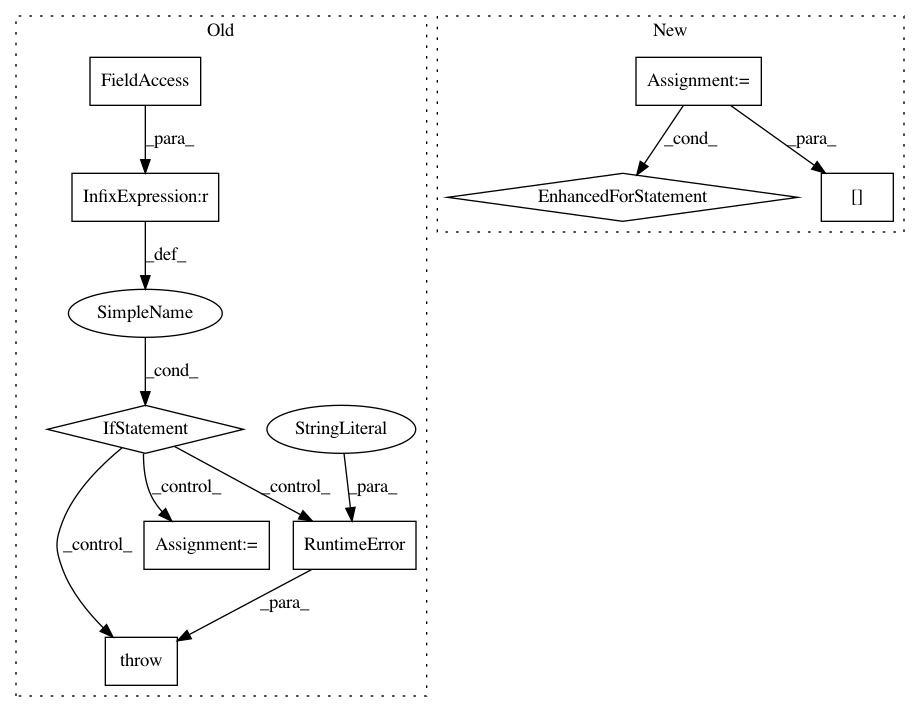

38a40828ec688be626e51ebcb1a60a54479fd997,gpytorch/lazy/toeplitz_lazy_variable.py,ToeplitzLazyVariable,diag,#ToeplitzLazyVariable#,53
Before Change
else:
WTW_diag = self.c[0].expand_as(self.c)
if self.added_diag is not None:
if len(self.added_diag) > len(WTW_diag):
raise RuntimeError("Additional diagonal component length does not \
match the rest of this implicit tensor.")
WTW_diag = WTW_diag + self.added_diag
return WTW_diag
def evaluate(self):
After Change
if len(self.J_left) != len(self.J_right):
raise RuntimeError("diag not supported for non-square interpolated Toeplitz matrices.")
WTW_diag = Variable(torch.zeros(len(self.J_right)))
for i in range(len(self.J_right)):
WTW_diag[i] = self[i:i + 1, i:i + 1].evaluate()
return WTW_diag
def evaluate(self):
In pattern: SUPERPATTERN
Frequency: 3
Non-data size: 9
Instances
Project Name: cornellius-gp/gpytorch
Commit Name: 38a40828ec688be626e51ebcb1a60a54479fd997
Time: 2017-08-29
Author: ruihan.wu14@gmail.com
File Name: gpytorch/lazy/toeplitz_lazy_variable.py
Class Name: ToeplitzLazyVariable
Method Name: diag
Project Name: pyprob/pyprob
Commit Name: 1c758ba9d6c14d9b9d3599e44c3508e2692d8d35
Time: 2018-09-28
Author: atilimgunes.baydin@gmail.com
File Name: pyprob/distributions/empirical.py
Class Name: Empirical
Method Name: expectation
Project Name: facebookresearch/Horizon
Commit Name: 96f486bd47be8baad365a32fd34d22881fdafa95
Time: 2020-07-30
Author: czxttkl@fb.com
File Name: reagent/training/ranking/seq2slate_sim_trainer.py
Class Name: Seq2SlateSimulationTrainer
Method Name: _simulated_training_input